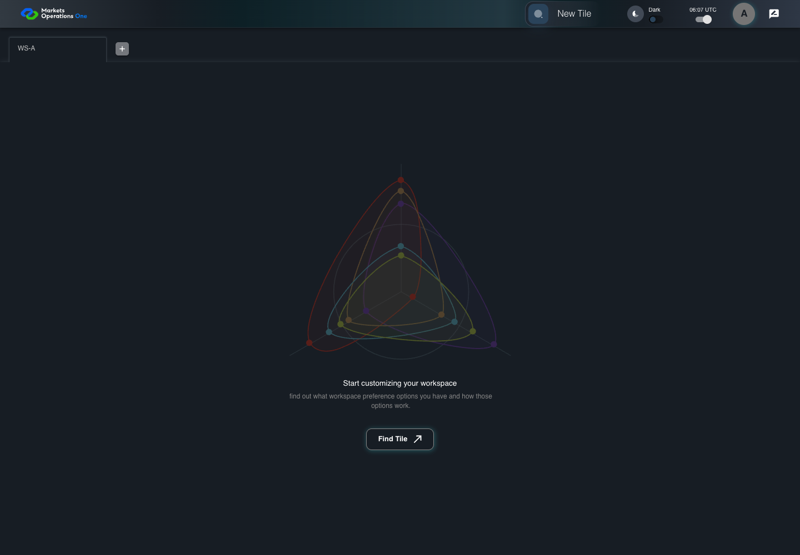

AUTH-030 callback route and restored workspace
PASS · application/run-050/auth-030-callback-route-and-restored-workspace-e91e9e4d1093-attempt-1 · ACTUAL_APPLICATION_LOCAL_SERVICES
Actual React; controlled callback/login responses; unsigned browser-only credentials; empty seeded WS-A. Provider acceptance and BFF fallback are not verified.
2026-10-22T06:07:20.893Z to 2026-10-22T06:07:25.535Z
Assertions and result · Artifact manifest · Exact run inputs and source hashes
Result SHA-256:e74a137fc4e8d7afa1738bcc53a7341cc4007ea6cb3114edebe439d21c2136e4Machine observations
- callback-requests.json
9a4f1d451cfa14205c35ea854aaa925eb97bf238ba1e21febfb89f10678d126c - configured-callback.json
3c39de5a328c9543cdc4287447c2e7408698d3008d29b5dd6587594582ad6bd5
Screenshot capture: CAPTURED. Named frames: 8.
Step screenshot evidence: COMPLETE. 7/7 canonical steps have execution screenshots.
Canonical step timeline
Given User A is an entitled fixture user in an isolated browser context with empty browser storage
Execution: PASSED.
1. step-01 Visible state after step 1: Given User A is an entitled fixture user in an isolated browser context with empty browser storage
2026-10-22T06:07:22.386Z · 1440×1000
Step: /Users/lushevol/code/github/ratan-release-impact/workbench/tasks/ui-test-coverage-20261022/test-cases.md:1227
SHA-256:f6681a39e8f7702be9d0264aceecd72753062b0cc58016f7484f14e228d1cd35And the configured callback URL has query ?code=ENTRA-CODE-A
Execution: PASSED.
2. step-02 Visible state after step 2: And the configured callback URL has query ?code=ENTRA-CODE-A
2026-10-22T06:07:22.717Z · 1440×1000
Step: /Users/lushevol/code/github/ratan-release-impact/workbench/tasks/ui-test-coverage-20261022/test-cases.md:1228
SHA-256:664babd84ff6d7926ad8e99d7a4bbde727c1a202e01dd31a587c9d3836eefb38And the selected SSO exchange endpoint accepts the fixture code for user-a
Execution: PASSED.
3. step-03 Visible state after step 3: And the selected SSO exchange endpoint accepts the fixture code for user-a
2026-10-22T06:07:22.922Z · 1440×1000
Step: /Users/lushevol/code/github/ratan-release-impact/workbench/tasks/ui-test-coverage-20261022/test-cases.md:1229
SHA-256:664babd84ff6d7926ad8e99d7a4bbde727c1a202e01dd31a587c9d3836eefb38And the successful response restores the fixture tab labelled "WS-A" inside the tablist named "workspaces" on the Home page
Execution: PASSED.
4. step-04 Visible state after step 4: And the successful response restores the fixture tab labelled "WS-A" inside the tablist named "workspaces" on the Home page
2026-10-22T06:07:23.119Z · 1440×1000
Step: /Users/lushevol/code/github/ratan-release-impact/workbench/tasks/ui-test-coverage-20261022/test-cases.md:1230
SHA-256:664babd84ff6d7926ad8e99d7a4bbde727c1a202e01dd31a587c9d3836eefb38When the browser navigates to that callback URL
Execution: PASSED.
5. step-05 Visible state after step 5: When the browser navigates to that callback URL
2026-10-22T06:07:24.480Z · 1440×1000
Step: /Users/lushevol/code/github/ratan-release-impact/workbench/tasks/ui-test-coverage-20261022/test-cases.md:1231
SHA-256:4d745c8f55188763e94851fe67201b5f19083469ba6fca575040044b0679afb0Then the tab labelled "WS-A" inside the tablist named "workspaces" on the Home page is visible
Execution: PASSED.
6. step-06 Visible state after step 6: Then the tab labelled "WS-A" inside the tablist named "workspaces" on the Home page is visible
2026-10-22T06:07:24.582Z · 1440×1000
Step: /Users/lushevol/code/github/ratan-release-impact/workbench/tasks/ui-test-coverage-20261022/test-cases.md:1232
SHA-256:4d745c8f55188763e94851fe67201b5f19083469ba6fca575040044b0679afb0And the browser records exactly one callback-code POST to "/api/auth/v3/sso/login"
Execution: PASSED.
7. step-07 Visible state after step 7: And the browser records exactly one callback-code POST to "/api/auth/v3/sso/login"
2026-10-22T06:07:24.664Z · 1440×1000
Step: /Users/lushevol/code/github/ratan-release-impact/workbench/tasks/ui-test-coverage-20261022/test-cases.md:1233
SHA-256:11dea2866941a5e7d10442fcb31575fcbd6ee1ce8ea5bcdd43b3001171e3426a
Additional named frames

The final visible state after the named test assertions.
2026-10-22T06:07:24.832Z · 1440×1000Step: Test source: /Users/lushevol/code/github/ratan-release-impact/workbench/e2e/audit-specs/callback-profile.spec.ts:20
SHA-256:
11dea2866941a5e7d10442fcb31575fcbd6ee1ce8ea5bcdd43b3001171e3426aScreenshots establish visible state only. Assertions and traces support functional claims.